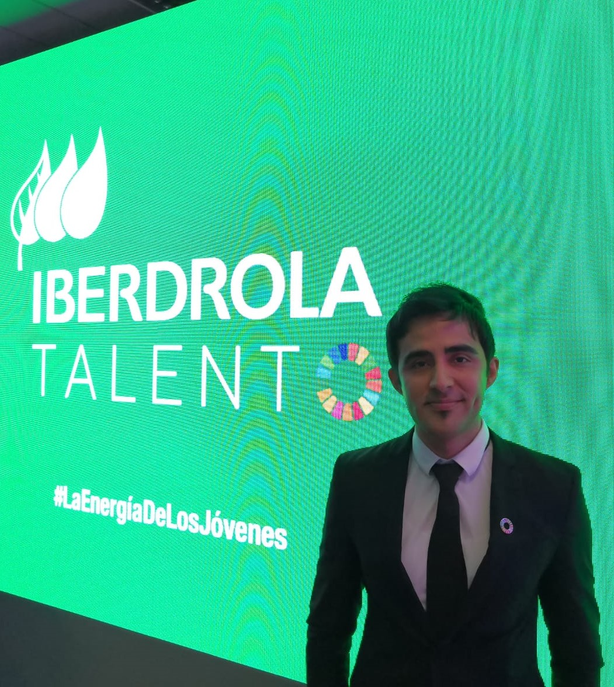

An acknowledged leader with sound business judgement and excellent multi-lingual communications skills,
adept at guiding teams to success.
Education
- MASTER OF SCIENCE IN ENERGY ENGINEERING
- Polytechnic University of Madrid, Spain – Master´s Dissertation stage 2019
- MASTER OF SCIENCE IN MANAGEMENT OF MODERN POWER SYSTEMS
- Technical University of Cluj-Napoca, Romania – Graduated 2016
- BACHELOR OF SCIENCE IN ELECTRICAL ENGINEERING
- Technical Institute of Ciudad Madero, Mexico – Graduated 2010

Professional Experience
- ERASMIL MANTENIMIENTOS, Madrid Spain, 2019
- FACILITY MANAGER INTERN
- Pantaleon Sugar Holdings, Mexico and Guatemala 2012 – 2013
- ELECTRICAL ENGINEER TRAINEE
- Construction Design and Leasing Company, Mexico 2010 - 2012
- ELECTRICAL INSTALLATION ENGINEER
- National Institute of Nuclear Research (ININ), Mexico 2009 – 2010
- RESEARCH SCHOLAR
Additional Training and Activities
- Volunteer, Self-Sufficiency (Renewable Energies) Project, Vila Flora, Prague, Czech Republic, 2017
- Volunteer, Welcoming and Greener Future Project, Edinburgh, Scotland, 2015
- Prep Year of Romanian Language, Babes-Bolyai University, 2013, Romanian Language Certificate
- Participant, Advanced Course in Sugar Mill Engineering, CENGICAÑA (Guatemala), 2012
- English as a Second Language, University of Belize, 2010 -2011, English Language Certificate
- Participant, Regional Workshop on Reactor Core Internals Behaviour and Repair, ININ, 2009